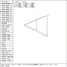
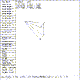
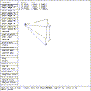
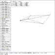

 Figure (es5-edge1): ARB5 Edge 14 Moved Through (1, 1, 1)
mged> Select the ``edit menu'' entry in the solid edit menu
mged> Select the ``move edges'' entry in the ARB menu
mged> Select the ``move edge 14'' entry in the ARB8 edges menu
mged> p 1 1 1
mged>
The edge 14 is moved so that it moves through the point (1, 1, 1). Note that this point is the mid-point between points 1 and 4. See Figure (es5-edge1) .
mged> p 0 2 0
mged>
This restores the original shape.
 Figure (es5-edge2): ARB5 Point 5 Moved to (-1.5, 1, 1)
mged> Select the ``move point 5'' entry in the ARB5 edges menu
mged> p -1.5 1 1
mged>
The point 5 is moved to location -1.5, 1, 1. See Figure (es5-edge2) .
mged> p -1 .5 .5
mged>
will restore the original shape.
 Figure (es5-edge3): ARB5 Edge 45 Moved Through (-1.5 1 1)
mged> Select the ``move edge 45'' entry in the ARB5 edges menu
mged> p -1.5 1 1
mged>
In Figure (es5-edge3) , the edge 45 is moved so that it passes through the point (-1.5, 1, 1). Note that this point lies between the points 4 and 5.
mged> p -1 .5 .5
mged>
This restores the original shape.
 Figure (es5-edge4): ARB5 Edge 12 Moved Through (2, 1, 2)
mged> Select the ``move edge 12'' entry in the ARB5 edges menu
mged> p 2 1 2
mged>
In Figure (es5-edge4) , the edge 12 is moved so that it passes through the point (2, 1, 2). Note that the coordinates correspond to point 2.
The movement of the edges may yield unpredictable results when the edges are not parallel to one of the axes.
To return control to the VIEWING state, select the ``REJECT Edit'' item on the button menu, press the ``reject'' button on the button box, or enter the command press reject on the keyboard. Then, enter
mged> d arb5
mged>
to drop the ARB5 from view.
{kind=link}
{kind=link}
{kind=link}
{kind=link}